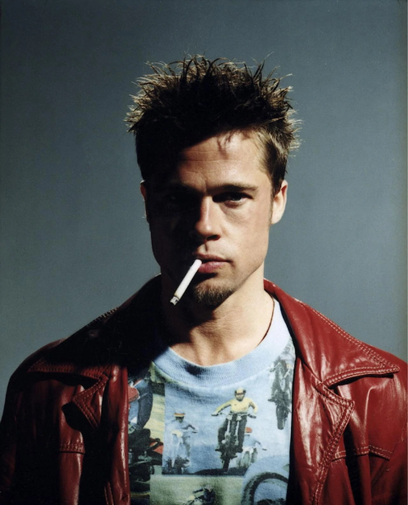
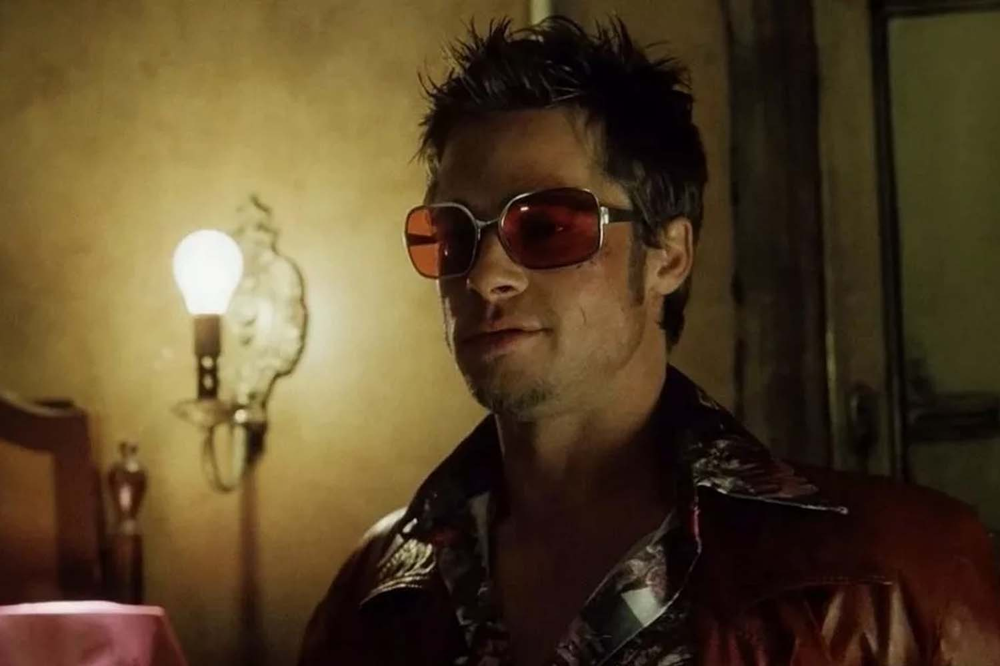
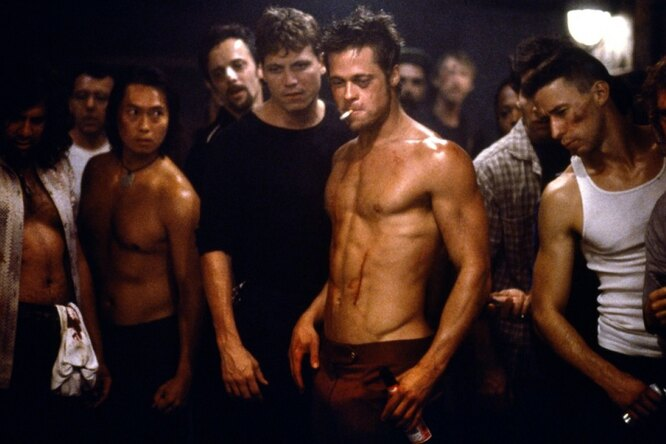
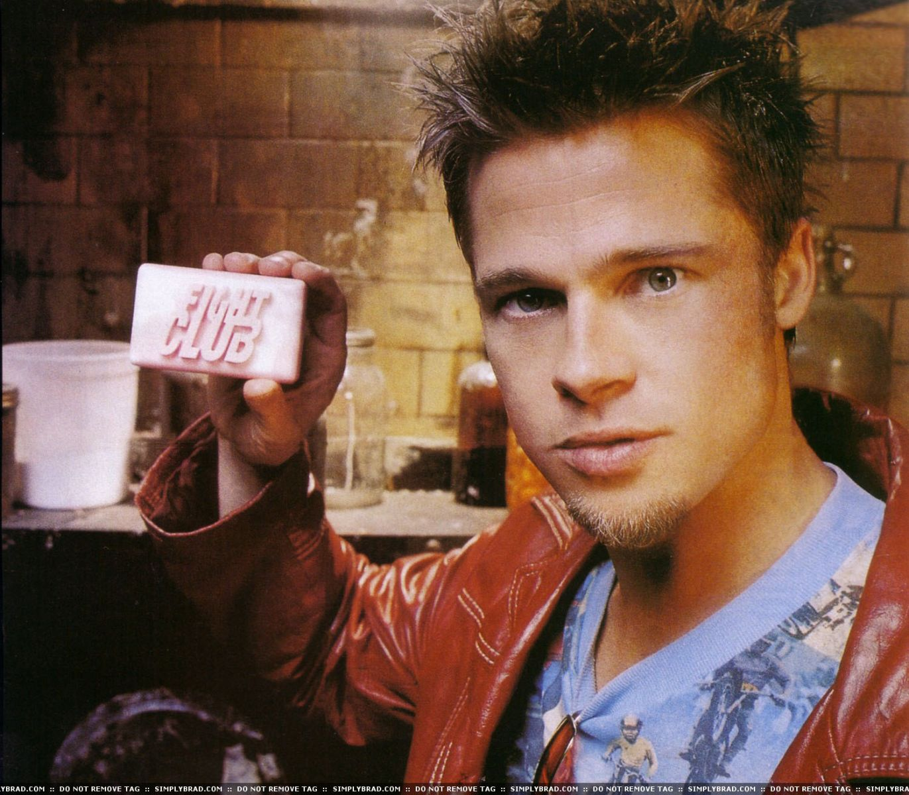
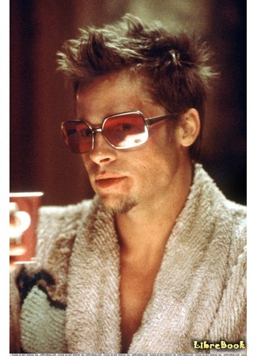
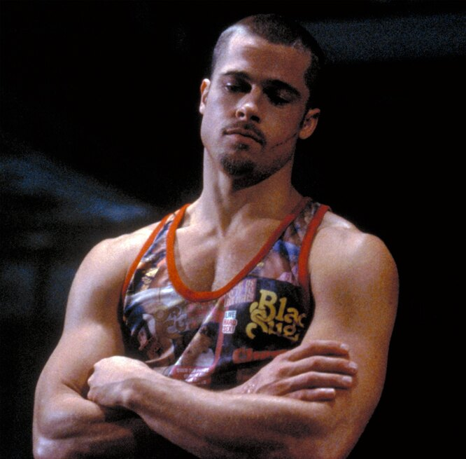
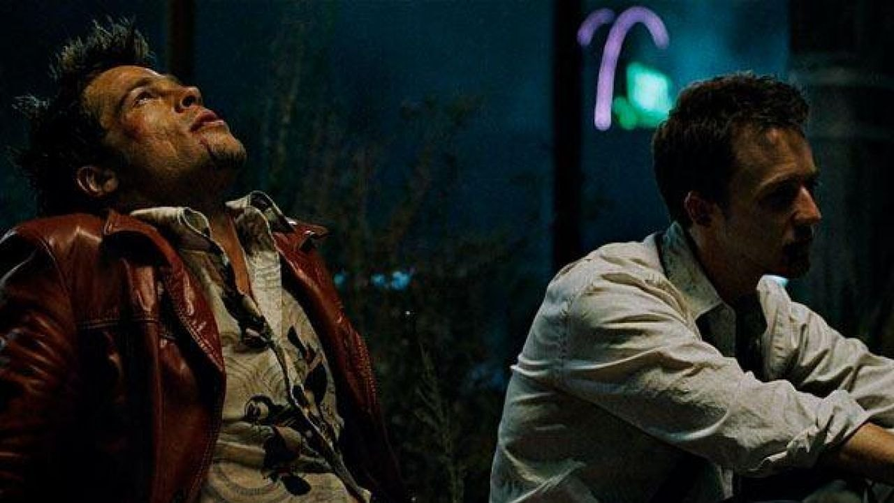
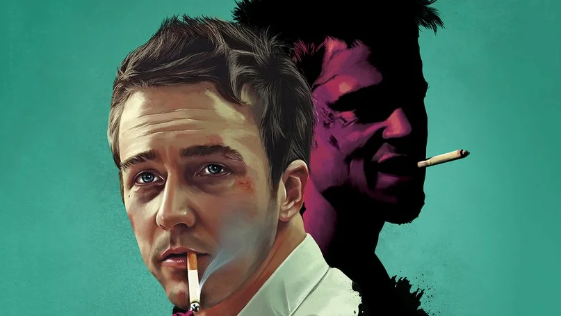
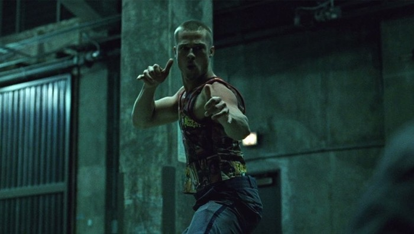
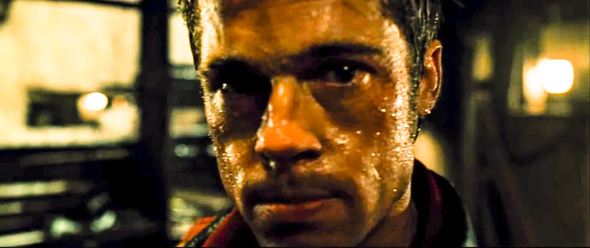

Тайлер Дерден

Описание
Персонаж и главный герой романа «Бойцовский клуб» и снятого по его мотивам одноимённого фильма и комиксов «Бойцовский клуб 2» «Бойцовский клуб 3».
Рассказчик страдает бессонницей и раздвоением личности и изображается
как неназванный человек (указанный в титрах как «Рассказчик») днём,
который становится хаотичным и харизматичным Тайлером Дёрденом ночью в
периоды бессонницы.
Первое появление
Рассказчик впервые появился в семистраничном рассказе в сборнике 1995 года «В погоне за счастьем». Позже эта история стала шестой главой романа «Бойцовский клуб», который Паланик опубликовал в 1996 году.
Занятие
Крушить, ломать, быть крутым и свободным, еще делает классное мыло.
Настоящее имя
Неизвестно
Локация
Калифорния
Галерея








